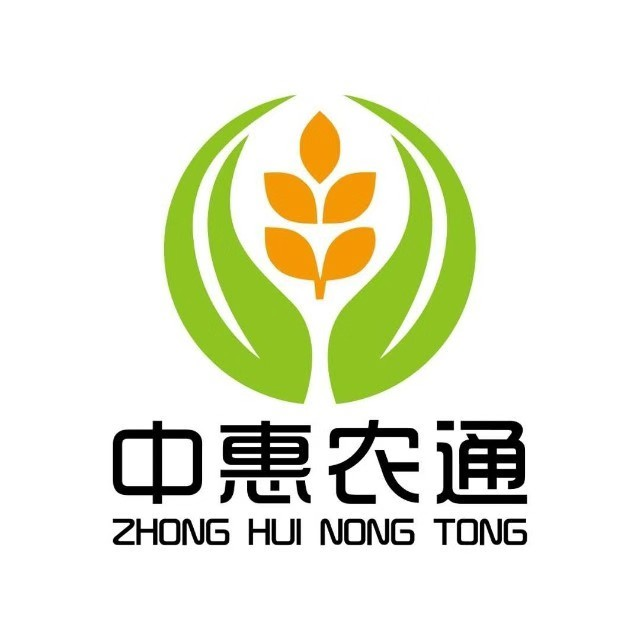

中惠农通是一个农贸和农副产品供应链体系，以赋能实体、产销直通、逐批定向溯源、惠客助农为特征，按照全国城乡振兴工作委员会的“八个一”计划，建设成为新型现代农贸模板。
振兴实体
中惠农通生产端和流通端的商户都是实体，通过线上和线下结合的方式经营。实体生产才会有尊重自然规律并且种类丰富的农产品，实体流通才会有专业细心的农产品流转和面对面的责任
实体的繁荣才有家乡的繁荣，才有家家户户的受益
升级赋能
通过农业发展、信息科技、商业运管、金融信用等四大领域的联合赋能，十六项措施的升级优化，提升传统业态的竞争力和服务水平
响应生产、供销、信用三位一体的产业政策方向，免除中间环节，变层层趋利关系为合作共赢关系，让生产端和流通端的农民拥有定价权
溯源检测
中惠农通的供应链实行对产品批次的溯源和检测，凡是来自中惠农通供应链的产品，都可以查询到切实有效的溯源检测信息，让消费者拥有知情权
查询产品溯源信息（预制标签）可以直接手机扫二维码，也可通过手动录入溯源编号